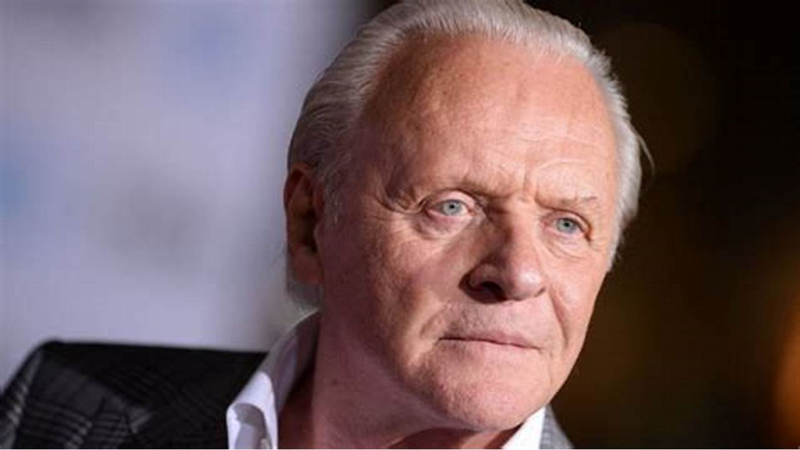
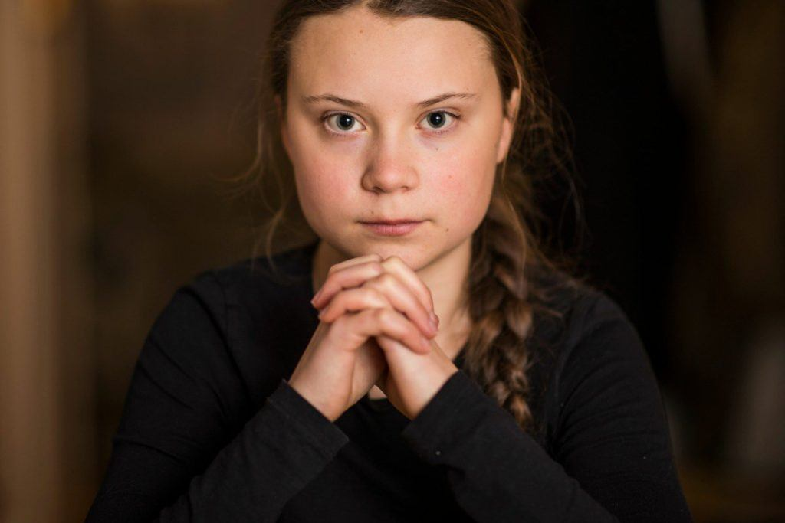
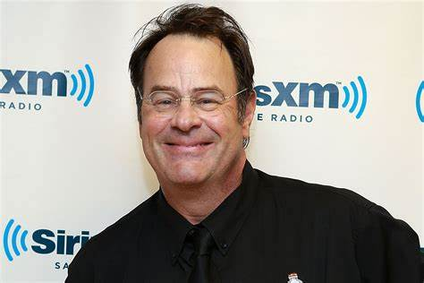
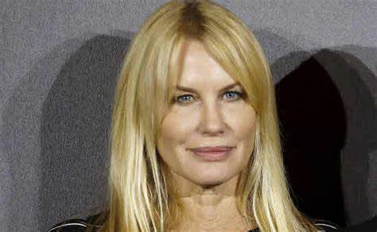
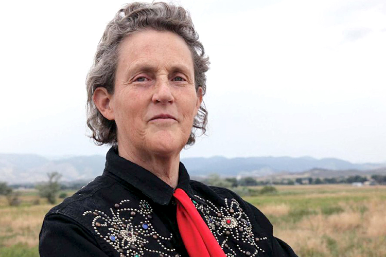
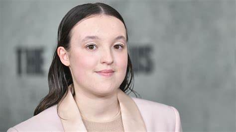

Ator
Anthony Hopkins é um ator galês-americano, conhecido por sua vasta
carreira no cinema e teatro, incluindo o papel de Hannibal Lecter.
Foi diagnosticado com Síndrome de Asperger mais tarde em sua vida,
o que ele descreveu como uma forma de entender sua própria mente e
seu método de atuação.

Ativista
Greta Thunberg é uma ativista ambiental sueca, conhecida por
iniciar o movimento "Fridays for Future". Ela é abertamente
autista e vê seu diagnóstico de Síndrome de Asperger como uma
"superpotência" que a ajuda a focar intensamente nas questões
climáticas, sem se distrair com normas sociais.

Comediante
Dan Aykroyd é ator, comediante e roteirista canadense, famoso por
"Os Caça-Fantasmas" e "Blues Brothers". Ele revelou ter Síndrome
de Asperger, afirmando que a condição o ajudou a se tornar um
observador mais atento e a desenvolver seu humor peculiar,
inclusive inspirando ideias para seus filmes.

Atriz
Daryl Hannah é uma atriz americana, conhecida por seus papéis em
filmes como "Splash, Uma Sereia em Minha Vida" e "Blade Runner".
Ela foi diagnosticada com autismo quando criança, mas manteve a
informação em segredo por muitos anos. Hoje, fala abertamente
sobre suas experiências e desafios.

Cientista
Temple Grandin é cientista, professora universitária e autora
americana, uma das mais influentes defensoras da causa autista no
mundo. Ela foi diagnosticada com autismo em 1950 e é uma voz
poderosa sobre a experiência autista, usando sua própria
perspectiva para inovar em áreas como o manejo de animais.

Atriz
Bella Ramsey é uma atriz britânica, conhecida por seus papéis em
"Game of Thrones" e "The Last of Us". Bella revelou publicamente
ser neurodivergente e ter sido diagnosticada com autismo. Ela fala
sobre como seu diagnóstico a ajudou a entender melhor a si mesma e
a navegar no mundo, usando sua plataforma para promover a
aceitação e a conscientização sobre o autismo.